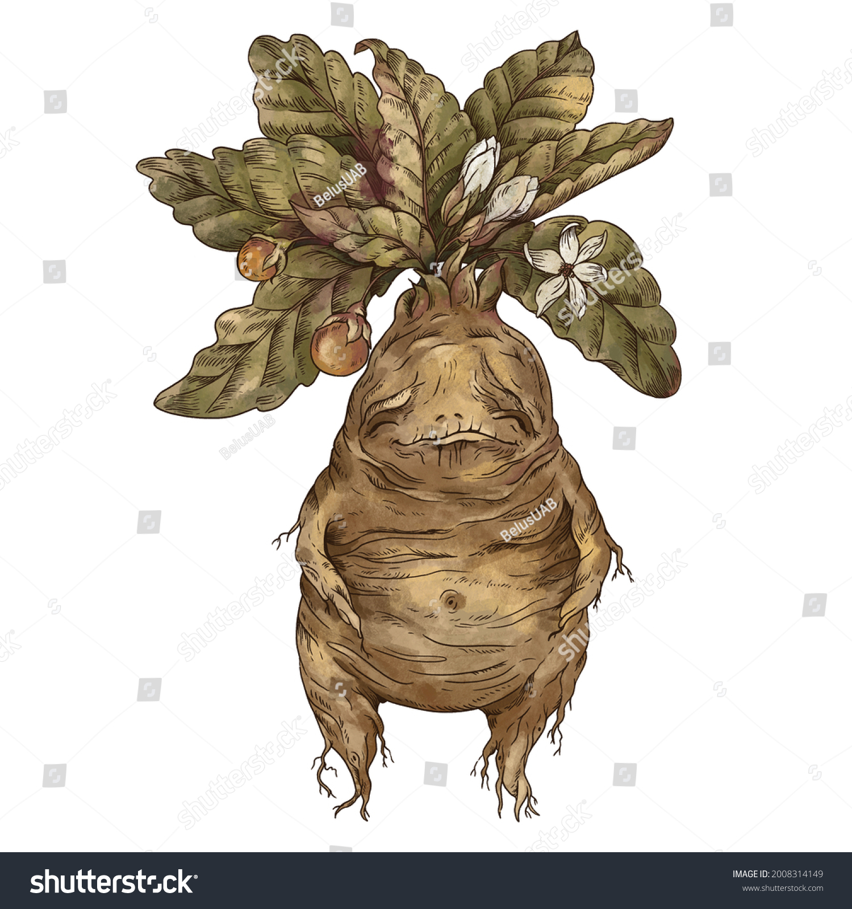

Mandrake adalah salah satu tanaman paling terkenal dan berbahaya dalam Herbology. Tumbuhan ini memiliki akar yang menyerupai tubuh bayi manusia, dan saat dicabut dari tanah, Mandrake akan berteriak keras. Jeritannya sangat berbahaya, bahkan mematikan untuk manusia dewasa. Namun, Mandrake memiliki khasiat penyembuhan yang luar biasa, digunakan untuk membuat ramuan yang bisa mengembalikan korban sihir gelap seperti petrifikasi. Pada tahun kedua Harry di Hogwarts, Mandrake digunakan untuk menyembuhkan mereka yang dipetrifikasi oleh Basilisk.

Devil's Snare adalah tanaman yang bereaksi terhadap sentuhan, merambat dan mencekik apa saja yang bergerak dalam jangkauannya. Tumbuhan ini berkembang biak dalam kegelapan dan kelembapan, sehingga tidak menyukai cahaya terang atau panas. Para siswa Hogwarts belajar cara menghadapinya dengan ketenangan dan cara memanfaatkannya dalam situasi pertahanan. Devil's Snare juga digunakan oleh para profesor untuk melindungi objek-objek penting karena kekuatannya yang mampu menghalangi orang.

Aconite adalah tanaman yang sangat beracun, juga dikenal sebagai Wolfsbane. Ia digunakan dalam ramuan yang membantu manusia serigala mengendalikan diri saat bulan purnama. Penggunaan Wolfsbane harus sangat hati-hati, karena sedikit kesalahan dalam dosis dapat mengakibatkan keracunan parah.

Bubotuber adalah tanaman yang menghasilkan cairan seperti nanah berwarna hijau kekuningan yang dapat digunakan untuk mengobati jerawat, meskipun dapat menjadi iritan kulit jika tidak diencerkan. Tanaman ini terlihat seperti akar hitam besar dengan bintik-bintik kecil yang menghasilkan cairan penyembuh. Para siswa belajar cara mengumpulkan dan menyiapkan cairan ini, yang sangat berguna dalam pengobatan tetapi membutuhkan kehati-hatian dalam penanganannya.

Gillyweed adalah tanaman berair yang memungkinkan penyihir bernapas di bawah air untuk sementara waktu. Daunnya yang kenyal seperti rumput laut, dan ketika dimakan, penyihir akan mendapatkan insang dan sirip yang memungkinkannya berenang serta bernapas di air. Gillyweed pertama kali diperkenalkan dalam Triwizard Tournament saat Harry Potter memakainya untuk menyelam di Danau Hogwarts. Di kelas Herbology, siswa mempelajari bagaimana menggunakannya dengan aman, khususnya dalam takaran yang tepat.
Professors of Herbology in Hogwarts
Professor Herbology di Hogwarts adalah pengajar yang sangat berperan dalam mendidik siswa tentang berbagai jenis tanaman magis dan penggunaannya. Mereka adalah bagian dari tim pengajar Hogwarts yang ahli dalam bidang tumbuhan sihir, menguasai karakteristik, perawatan, serta kegunaan dan bahayanya dalam dunia sihir. Berikut perkenalan tentang professor-professor herbology yang ada di hogwarts:
- Professor Herbert Beery
- Professor Pomona Sprout
- Professor Neville Longbottom

Pada suatu ketika, Beery dipekerjakan di Sekolah Sihir dan Sihir Hogwarts, dan menjadi Profesor Herbology. Kemudian, dongeng Air Mancur Keberuntungan diadaptasi menjadi pantomim oleh Profesor Beery selama perayaan Natal untuk para siswa di Hogwarts. Hal itu mengakibatkan kebakaran yang disebabkan oleh Ashwinder yang membesar, dan duel yang melibatkan dua aktris utama-salah satunya telah terlibat secara romantis dengan aktor utama sampai sesaat sebelum tirai naik, dan telah ditolak demi yang lain.

Professor Sprout bergabung dengan Hogwarts sebagai professor Herbology, sebuah posisi yang membutuhkan keahlian tinggi, terutama karena Herbology adalah mata pelajaran yang bisa berbahaya jika tidak diajarkan dengan benar. Sprout adalah seorang penyihir yang secara alami sangat peduli pada tanaman dan lingkungan, dan ia memilih Herbology sebagai panggilan hidupnya. Dedikasinya membuatnya diangkat sebagai Kepala Departemen Herbology.

Pada awalnya, Neville merupakan seorang murid di Hogwarts, Neville dikenal pemalu dan sering merasa kurang percaya diri, terutama di tahun-tahun awalnya di Hogwarts. Namun, sejak kecil, ia telah menunjukkan minat yang besar pada tanaman, dan Herbologi menjadi salah satu pelajaran yang ia kuasai dengan baik. Di bawah bimbingan Professor Pomona Sprout, yang melihat potensi besarnya dalam bidang ini, Neville mulai semakin percaya diri. Setelah pertempuran akhir melawan Voldemort, Neville menjadi pahlawan dan menemukan rasa percaya diri dalam dirinya, yang pada akhirnya mengantarkannya menjadi Profesor Herbologi di Hogwarts.